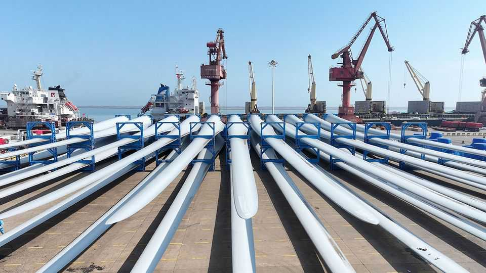

How Europe should deal with the new China shock
Amassing “second-strike” trade weapons is not enough

Oct 8th 2026
THE EUROPEAN UNION has long had two China problems. The first concerns competition, at home and abroad, from increasingly capable Chinese exporters of cars, machinery and other things that Europe was once better at making. The second is that the EU’s economic power couple have not seen eye to eye over how they should deal with that first problem. France has favoured trade barriers to imports from China. Germany, whose manufacturers sell lots of stuff in China, has preferred engagement. The result has been confusion.
Now a second China shock is hollowing out the German industrial heartland and the pair are uniting in Gallic assertiveness. In a letter to the European Commission on October 5th, they proposed granting Brussels wide powers. If any country retaliates disproportionately when the EU imposes trade penalties on it, Europe should be able to hit back fast. The letter does not name China, but everybody knows it is the target. At a summit on October 15th, other European leaders will decide whether to sign on to the Franco-German proposals.
Some “second-strike” economic weapons may well be worth having. China is not a free and fair trader. Last year it imposed export restrictions on rare earths that left European armsmakers, among others, starved of critical inputs. One aim of the Franco-German proposals is to make it think twice before repeating such bullying. But economic tools must be designed carefully and used judiciously. More important, there is no silver ICBM. The only way to make trade weapons a credible deterrent is the arduous work of building alternative supply chains and making European industry more competitive.
Europe’s trade with China has become increasingly asymmetric. In 2000, the year before China joined the World Trade Organisation, its trade surplus with the EU (counting most subsequent joiners and not yet excluding Britain) was equivalent to roughly 0.6% of the bloc’s GDP. Today it stands at 2% of GDP, or nearly €1bn ($1.1bn) a day. China is bombarding European markets with electric cars, solar panels, wind turbines and other products—which, China hawks allege, are made artificially cheap by subsidies and an undervalued currency.
European manufacturers, meanwhile, often rely on Chinese inputs, and not just rare earths. In April the EU Institute for Security Studies, a think-tank, conducted a stress-test of 56 active ingredients that go into drugs, and their precursor chemicals. It found that, for 20 of them, a disruption to Chinese supplies would impose “severe consequences” on European drugmakers. Over 70% of the precursors for amoxicillin, a common antibiotic, come from China. In an era of stand-offs, such dependencies are dangerous.
To shore up the EU’s defences, France and Germany want it to use existing tools more aggressively, broaden the rules so that sanctions apply to whole sectors, not just firms, and streamline the process by staffing up the trade eurocracy.
For its part, China has an interest in not angering the EU. Cut-throat competition at home and a tariff wall around America mean that many Chinese firms lose money unless they can sell their products in Europe. In a few critical areas China also depends on Europe: it needs Dutch chipmaking equipment and access to aircraft parts, for instance.
But China would take Europe’s new threats more seriously if the EU made a real effort to diversify. That means more free trade, especially with places rich in things Europe needs, like Brazil and Canada for rare earths. It also means less red tape, which encumbers European firms with costly requirements to monitor their supply chains. The Franco-German letter puts too much store by the threat of higher duties. That threat did not work for America in its own confrontation with China, not least because of the self-harm that tariffs can inflict. Until Europe has alternative sources of supply, China may assume it will be the first to cry uncle in any trade tussle. ■